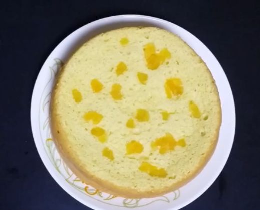

Semolina Cake

A simple and delicious cake made with Semolina (Rava)
Semolina Cake, locally known as Thari Pola is a delicious tea-time snake from Northern Kerala, India.
Ingredients
- 3 eggs
- 2 tbsp semolina (rava)
- 3 tbsp flour
- 5 tbsp sugar
- 1 tsp cardamom powder
- 1 tsp ghee
- 1 pinch salt
- Tutti Fruti or Nuts (optional)
Directions
- Take a saucepan, grease it with ghee and keep it at low flame on stove.
- Crack open the eggs in a bowl and add the sugar and cardamom powder to it.
- Beat the eggs with a beater at low speed in the beginning and gradually increase the speed.
- Add the pinch of salt in between and beat till it becomes double in volume and fluffy.
- Add the flour and semolina to the egg mixture and either fold the mixture with a spatula or beat it at low speed until everything is well mixed.
- Cook it for 35 mins (Add the tutti fruity or the nuts on the mixture after 15 mins from beginning).
- After 35 mins, the sides of the cake will be seperated from the pan.
- Semolina cake is ready! Enjoy it with your tea.